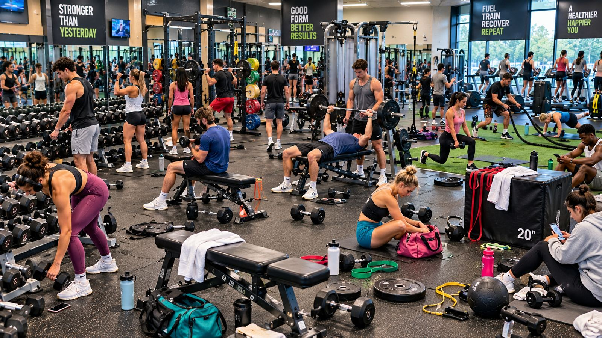

Mission 01
Scan the Gym Floor

🔴 Numbered markers = inspect here🟢 Found = hazard identified
How to play: Select a numbered marker in the scene or choose a number in the list. Decide whether that spot shows a safety concern. Find all 10, then move on to the Coach's Corner.
Mission 02
Coach's Corner: Make the Safer Call
Complete the gym scan to unlock the coaching scenarios.